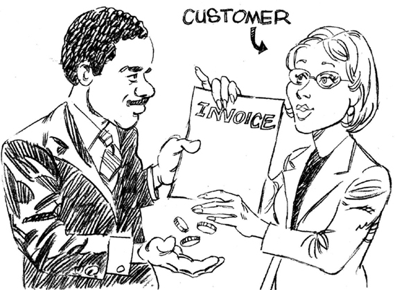

Norm Brodsky, “Street Smarts” columnist and senior contributing editor for Inc. magazine, has experienced the heights and the depths of what it means to run a small business. Among the six businesses he has founded and grown is Citistorage, a document-archive company, which he built to a mega-million-dollar success before selling it in 2007 for $110 million. He has declared bankruptcy twice in his life.
Citistorage began as a messenger business. When one client asked Norm to store four boxes, it changed the course of the company’s history. Now, if you visit Williamsburg, Brooklyn, you’ll see great white and blue industrial buildings that stretch whole city blocks storing millions of boxes. Citistorage was a big part of the gentrification of Williamsburg, proof that successful businesses can change neighborhoods and lives. Norm, his wife Elaine, and their executive team built a corporate culture that was the envy of every Fortune 500 company.
I used to bring my students to visit the company so they could be inspired by a brilliantly run organization. It’s one thing to talk about great management in the classroom, it’s quite another to see it in action. The Brodskys are not only great corporate citizens, they’re wonderful neighbors to the community. The company contributes mountains of gifts for needy families during the holidays and is famous for the annual Fourth of July block party, when thousands of people come to the waterfront to experience Norm’s generosity firsthand.
As generous as he is, Norm is no softy. The staff gave Norm the nickname “Stormin’ Norman” for a reason; when he has a vision, nothing can stop him. Norm is a serial entrepreneur with a passion to help small businesses thrive. He’s given thousands of talks about what it takes to run a successful company and personally mentored hundreds of entrepreneurs. He is also a well-respected author and philanthropist. This self-made man now shares with you what he learned on his journey. The great news is, everything Norm talks about you have read in this book.
I was lucky enough to have several hours with Norm. I can’t think of anything better to leave you with than a partial transcript of our time together.
Dawn: Norm, thanks for your time today. I appreciate the opportunity to share this interview in a book I’m writing, designed to help small businesses, many of which are hurting.
Norm: That’s everybody! I’ve seen a lot of businesses that went bankrupt that could have made it. They have a great idea, product, or service, they have the selling skills—but they run out of cash. The owners are stunned when it happens. Most people say, “I didn’t have enough money. I ran out of money.” It’s not that they didn’t have enough money; they didn’t use the money properly. It’s a basic thing. The way they normally learn is by trial and error or luck. Most of the small businesses that fail do so because the entrepreneur doesn’t have a general understanding of the numbers of the business. My philosophy is that numbers make the business. They are not hard to understand. You don’t have to be schooled in accounting. I was an accounting major in college and I didn’t get it because I didn’t want to get it. I was sales driven. If you have an understanding of these critical numbers you can see trouble coming.
The Financial Dashboard Is the Key to Small Business Survival
Dawn: Why do you think so few small businesses survive?
Norm: Knowing how to read your financial dashboard is the key to survival. In my experience, 90 percent of people who start a small business have no clue how to read their financials. That’s why most don’t survive. Most small business managers think it’s complicated, so they’re afraid of it. It’s really easy to teach people how to monitor what drives their business success.
Dawn: What’s the first objective when you’re running a small business?
Norm: At the beginning the goal is survival. It has nothing to do with making or losing money. It’s whether you can live off your own cash flow. That’s the important part. Once the business is growing, there’s lot of other things you can do.
Dawn: How did you learn the numbers?
Norm: My father taught me. He was a door-to-door peddler before the advent of credit cards and department stores. I asked him, “How do you make money?” He said, “It’s really simple; you see this bottle here? You buy it for $1 and you sell it for $2. You have a 50 percent gross margin.” I also learned the hard way. Even though I’ve been successful, I’ve gone bankrupt twice; once when I was 33 and the second time when I was 46. You can hire someone to do the accounting work, but you can’t hire someone to understand your numbers. That’s your job as an entrepreneur.
Dawn: Why do you think most entrepreneurs don’t know how to read a basic financial statement?
Norm: Because most entrepreneurs started in sales. They think sales are the only thing that drives the business and determines success. It’s important, but there’s a lot more to running a successful business. Every time I speak to large groups, I always ask the same question. “How many of you started your careers in sales and now run your own small business?” An overwhelming majority, usually over half the audience, raises their hands. What do salespeople know about running a business? All they know is sales. They think, “I sold a million dollars for this other company, I can do it for myself.” They probably can.
But what they don’t understand is what goes into a business besides sales. Just because you’re good at sales doesn’t mean you won’t go bankrupt.
Dawn: Why wouldn’t hiring an accountant be the answer?
Norm: One of the most important things I do is to counsel people on the lingo their financial people and accountants use so at least they know the basics. Accountants, though, are historians. Their function is important because the past informs the future. But by the time you get the numbers from the accountant, it’s too late. While you can learn a lot from history, you can’t survive on history, you have to survive on the present. You need to have a basic understanding of how to measure what drives the business. You could go back to school and take accounting classes. But even if you do, it takes a long time. The courses are also in such depth I’m not sure they teach the basic ABCs of running a business. The other problem is, you could take an accounting course, pass it, and still not understand how to run a business.
Dawn: What few basic things does every small business manager need to know?
Norm: I think the most important statement is the Cash Flow Statement. You need to understand what it is, how it works, and what it tells you. If you don’t have enough cash to pay your bills, you’re out of business. You can’t buy your product because you can’t pay your suppliers and you can’t pay your people. When I mentor small business owners we review revenues, costs, cash flow, and budgeting. I run through hundreds of flip charts going through this stuff! How many people know a profitable business could be going bankrupt? Entrepreneurs need to understand the difference between cash flow and profits. Most don’t. So here’s a question for you, when is a sale complete?

Dawn: When you collect on that sale.
Norm: That’s right! If you’re not a candy store, you don’t collect right away. Your sales plan might be great, but you could still run out of money! Entrepreneurs will say, “Whattya mean I’m gonna run outta money?” They don’t understand if they plan to do $5K a month in sales and they only do $4K, that could bankrupt them. Your day-to-day operations start on a cash basis. You have limited cash. You have to make sure you don’t run out of it. Whether you’re making money or not is captured on the Net Income Statement, but that has nothing to do with cash flow. They have to understand the difference. Cash is the hardest thing to replenish and the easiest thing to lose.
Mistakes Every Entrepreneur Makes
Dawn: What recurring problems do you see?
Norm: Every entrepreneur I have ever met makes the same two mistakes: They overestimate sales and they underestimate the cost to run the business. How do I know? I made the same mistakes. The first thing I teach people is to be realistic with what they can do in sales. They’re fooling themselves when they’re too aggressive. Sales and collections drive cash flow, so if sales projections are unrealistic, cash flow will be off. If they don’t have enough cash, they’re out of business. I see these crazy sales estimates and I say, “These projections are not achievable!” They say they’re constrained because they can only raise $200K so they increase the sales expectations to make up the shortfall. Not a good strategy. They should scale the business according to how much start-up capital they have and be conservative. See what the business can actually generate in sales and what it will actually cost. Most buy a computer program and arbitrarily estimate sales and expenses based on available capital, not what the market is telling them. Projections are not for investors; they’re designed to help you run the business. If your projections are not realistic you’re destined to fail from the beginning.
Dawn: How do entrepreneurs project what they need to start a business?
Norm: They have no idea how much money they need to start a business. The overwhelming majority don’t go to business school. They might be able to project net revenue and net income but they have no clue about cash flow projections. They don’t understand what the relationship is between one number and another number.
I mentor 20 small business owners a month pro bono. They all have the same problem. When I ask them to do a cash flow statement they hand me what they think is a cash flow statement.
They’ll say, “Here are my sales projections, here’s what it’s going to cost me, and here’s how much money I’m going to make.” That’s very nice, but they’ll go broke before they get there. Why? Because they only budget their expected profits, not their expected cash flow.
In a start-up business, you can be losing money and still stay in business if you manage your cash flow right. Most people don’t get that because they don’t know the difference between cash and accrual accounting. Showing a profit on the Net Income Statement doesn’t tell you if you have enough cash to achieve that bottom line.
Accounting on a cash basis is typical for small businesses that generate less than $5 million in annual sales. It captures cash transactions as they happen. Accrual accounting, however, helps manage the timing of cash flow for receivables and payables in the future. When a sale is made and when the business gets paid for it has to be tracked. It’s the only way to know if you’ll have enough cash to run the business now and in the future, week by week, month by month.
The Real Reasons Entrepreneurs Run Out of Money
Dawn: Most entrepreneurs say they went bankrupt because they didn’t have enough start-up capital.
Norm: In almost every case, they don’t understand how to use the start-up money they do have. One of the most common mistakes when people open a business is to rent an office and buy fancy furniture. Entrepreneurs have got to understand that the money they get from their first round, whether it’s their own money or from family or a friend, is easy to raise. But once that money is spent, they can’t go back twice to those people. The bank won’t loan them money until they’re a going concern so that’s not an option. They have nowhere else to go. The use of that money is their lifeline; if they run out of that lifeline, they won’t succeed.
Dawn: So most entrepreneurs don’t understand the difference between luxuries and necessities?
Norm: Exactly. When cash is tight at the beginning—and it always is—a lot of entrepreneurs spend money on luxuries. They don’t get that. It’s a luxury to have anything that doesn’t directly help generate cash flow. Remember, cash is the hardest commodity to get and the easiest commodity to spend. You can’t replenish it easily.
Dawn: How did you decide what to cut when cash was tight?
Norm: When I was 33 and went broke, I sat down with my wife. We had to figure out how much money we had to live on for the next 12 months. We also had to figure out where we could cut back. In my mind, we had to get rid of one of the cars. She said, “We need two cars! We have different schedules.” I said, “Having two cars is a luxury. We’re going to have to plan our lives better. It’s a necessity we have a car, it’s not a necessity we have two cars.” If you’re going to conserve cash at the beginning, you have to be brutal about cutting expenses to a bare minimum.
Dawn: You’ve clearly seen this dynamic with other small businesses.
Norm: There was one great software business that had so much potential; instead, it went bankrupt. They came to me after the fact. I asked, “What did you do with all the start-up money?” Their offices, logo, and stationery were gorgeous. Everything was high-end. So these software guys spent a fortune on an office no client would ever see because they work on-site at their clients. I said, “You spent all that money on luxuries.” They disagreed with me even after they went through Chapter 11!
I was in business 20 years before I bought a piece of new furniture because it was a luxury. Now I have opulent offices. When I was starting out, it was a necessity to have a chair. But I didn’t need a designer chair with an automatic massage thing in it. Why do I need fancy stuff?
The Numbers That Drive the Business Matter Most
Dawn: The numbers can be daunting because there are so many! How do you stay focused?
Norm: Every business has certain numbers that reveal trends and the future health of the business. Here’s where history is useful, especially for businesses that have been in operation for a while. A restaurant owner, for example, can tell you what his cash flow numbers are going to look like next week based on how many seats are filled on a Saturday night.
Every business has different, key measures that show patterns of opportunity and risk. When I owned the storage business, I could tell we had a problem based on certain numbers I would watch weekly. These included what we did in net revenues, how many deliveries we did, how many boxes we put away, and who owed us money and how much.
I got so good at looking at these indicators that I could tell my accountant how much money we made before he pulled the reports.
Dawn: One of the indicators you look at is accounts receivable.
Norm: If you sell on terms, part of that net revenue is not going to be collected, ever. I’ve been in business long enough to know, maybe 96–98 percent of receivables are collectible. It’s important to understand that for planning and projections. No business that sells its products or services on terms collects 100 percent of outstanding invoices. You must have an allowance for bad debt when you make cash flow projections.
Dawn: How do you manage accounts receivable?
Norm: You have a list. You go down that list to remind clients to pay their bills one day after their bill was due. Most small business managers wait until they run out of cash, then they realize a 30-day invoice is now 120 days old! By the time you get to that, you’re in trouble. If a 30-day invoice isn’t paid for 120 days, chances are, the client’s not paying because they’re in financial trouble.
How an Expert Collects Receivables
Dawn: What advice do you have about managing accounts receivable?
Norm: Small business managers don’t understand how important it is to collect a receivable. If a client hasn’t paid a 30-day invoice, the business should be calling that client on the 31st day. Jump on it. The customers who you’ve extended 90-day terms to who haven’t paid their bill should be called on the 91st day. Even small businesses that have been in business for years don’t follow this discipline. Don’t let the receivable age. When customers owe you money, you’re the bank!
Dawn: What do small business managers normally do?
Norm: Usually they let receivables slide until they realize they can’t pay their bills. Then they check to see who owes them money. Then they have an “OMG” moment. One guy owes them $100,000, he’s 120 days overdue and he should have paid in 30 days! Then the bigger question is, why did you extend this customer that kind of credit in the first place? The business won’t survive without receiving customer payments on time. Talk about payment terms up front when you’re having the sales conversation. Once the sale is made, you have to track delivery of the service as well as the receivable for payment.
Dawn: How do you bring up payment terms as part of the sales conversation?
Norm: Instead of chasing non-paying customers after the fact, wouldn’t it be better to assess that risk up front and decide if you even want to accept that sale? We tell our clients, “We’re glad to have your business. These are our payment terms. If you don’t pay us in 30 days, we’ll charge you 2 percent of the outstanding invoice.” You don’t become successful just chasing any sale.
Dawn: How do you handle customers who want 60- or 90-day payment terms?
Norm: The truth is, customers don’t like to pay bills, especially the smaller businesses. You have the option of negotiating payment terms up front by saying “We can’t afford to wait 60 days” or “We can’t afford to fulfill the next order until we receive payment.” If we extend a non-paying client more goods and services before they pay us what’s outstanding, our risk is greater. That’s how small businesses get in trouble. Whatever you do, don’t keep doing work for a non-paying customer! Start calling overdue accounts weekly. Don’t wait for a cash crisis to hit.
Discuss Payment Terms During the Sales Conversation
Dawn: What’s the risk if payment terms are not discussed during the sales conversation?
Norm: You make a sale. You say to the customer, company policy is payment is due in 30 days. The customer counteroffers to pay in 90 days. Now you have to make a decision. You can stand firm on the 30-day payment terms and walk away from the deal or accept the deal on his payment terms and decide if it’s worth it. Here’s how I think about that decision.
If the margins are really high, I’ll consider it. If not, the business will be stronger if I walk away from the deal. Net revenues won’t look as strong, but cash flow will be better.
Let’s say the sale is for $1,000,000 with a gross margin of 24 percent or $240,000. If normal payment terms are 30 days, we would normally be financing an $80,000 receivable. This is assuming we get full payment at the end of the month. [Norm rattled this off without a hitch. He had taken the gross margin ($240,000) and divided it by the 3 months it would be outstanding or $80,000 per month. I confess I was impressed.] But the client wants an extra two months to pay, that is an additional $160,000 in accounts receivable the business has to carry. If the cost of carrying that additional $160,000 receivable is 60 percent, I need to know, does the business have an extra $100,000 to carry that sale? [Sixty percent is Norm’s cost of capital, a number this long-time businessman knows by heart. Your accountant can tell you what this number is for you.] If not, this one sale could put me out of business even though net revenue looks great! Nobody thinks this way. Most entrepreneurs would not walk away from a million-dollar sale. But I would if I knew it would bankrupt me because the payment terms were too far out.
I’m not telling you to turn down the sale, you just need to know that if you accept that sale, you might have to borrow from the bank, or sell a receivable at a discount to raise cash to finance the receivable. You might be able to finance your receivables, you have a lot more options once the business is up and running and proven. You have to survive to do that. Making a sale on terms always involves risk. If you can measure that risk, you make a more intelligent decision.
Dawn: You have to know what your costs are to do that analysis.
Norm: Yes, but beyond that, you have to know the business has that additional $100K of cash flow to finance that receivable. There are other costs we didn’t even talk about like allocating fixed overhead and accounting for sales commissions, which can be sizable.
Dawn: It’s not just customers, but your salespeople need to be on board with the company’s payment terms.
Norm: Exactly. We incent our salespeople to care about payment terms because that protects our cash flow. So making the sale is just the first step but they need to care about payment terms as well. My salespeople would come back to the office declaring “We made the sale!” My next question was always “When are we getting paid?” They almost never had an answer. Most salesmen sell the lowest-price items or services because they don’t care about the gross margin on the sale or the payment terms. You’ve got to make them care.
At one point, when times got tough and payment dragged, we changed our internal sales commissions policy. We didn’t pay sales commissions until the company gets paid. That sure guaranteed that they would have the conversation about payment terms with every client.
Negotiate payment terms during the initial sales conversation. Determine if the business can afford to carry that receivable. Make sure the receivable is followed up on a timely basis. That’s how it should work.
Dawn: What do you say to customers who pay late?
Norm: It’s simple. We say, “Listen, you made the commitment, you knew the condition of the sale, can we pick up the check? ” Or “I’m just asking you to keep your promise.”
Dawn: Sometimes cash flow is tight even if you make the collections calls. What would you recommend?
Norm: Most small business managers see their bills are due and if cash is tight, they duck collections calls or they send partial payment to one vendor or another. What they should do is call up the supplier before the invoice is due, be honest, and say something like, “We had trouble collecting our receivables, in the next 30 days we’ll pay what we promised you.” Then do it. It’s always easy to make a deal with a supplier before the fact instead of after the fact.
Dawn: What risks should we look out for when cash dries up?
Norm: When small businesses run out of cash, the managers often don’t pay their withholding tax. This is a really bad idea. It’s the most expensive money because the fines are huge. And you can really get into trouble. If a small business doesn’t pay payroll through a payroll system, the owner becomes personally liable for tax withholding. If entrepreneurs don’t pay withholding taxes correctly, criminal charges could be raised. It’s easy to conserve cash by not sending the IRS a check when cash is tight, but the risks are enormous. Whatever you do, pay your withholding taxes!
How a Successful Entrepreneur Looks at a Balance Sheet
Dawn: Why is the Balance Sheet important?
Norm: How many people understand what a Balance Sheet is? Almost no one. When I look at a Balance Sheet, I focus on just two important numbers: current assets and current liabilities. If your current liabilities are greater than your current assets you’re bankrupt, or you will be very shortly. It means you don’t have enough cash or cash equivalents to cover short-term obligations.
Here’s an example of a business that came to me when it was in trouble. I said they were bankrupt and they didn’t believe me, so I took a look at their Balance Sheet. They had a bank loan that was due in three months for half a million dollars and current assets of a hundred thousand. They said, “The bank will give us an extension.” Maybe they will, maybe they won’t. I’m not saying they’ll go out of business but I am saying that’s a problem. It may not be a problem today, but when current liabilities are greater than current assets, you need to address it.
These entrepreneurs never looked at their Balance Sheet. They knew how to read the Net Income Statement and they were showing a profit, but they were still in perilous trouble. Suppliers aren’t going to get paid on time and it will become more and more difficult to pay the bills. I could see it. They couldn’t.
Dawn: How should entrepreneurs think about the Balance Sheet for planning purposes?
Norm: Managing your Balance Sheet and how much debt to take on should be part of completing annual budgets. Most businesses forecast net revenue and net income for the coming year, right? You need to keep track of the relationship between current assets and current liabilities too and work on that ratio if it’s out of whack. Sure your suppliers might wait another 60 days. But wouldn’t it be better if you had this in compliance so you didn’t have to worry about it? You wouldn’t have to take 400 collections calls either. Why not make your life easier?
How to Steer out of a Skid
Dawn: Norm, so many entrepreneurs come to you when they’re in crisis. How do you approach them?
Norm: The first thing you have to do is straighten out the mess, then figure out why it happened in the first place. If you don’t deal with why it happened, it’s going to recur. I call that Groundhog Day Syndrome. You’ll find they don’t understand the basic numbers of the business so they don’t know where they stand. They don’t have to become accountants, but reading their financial dashboard is step one. Until you teach them that, nothing can get solved long term. I actually have them write their budgets by hand in pencil so they know exactly where the numbers come from. No Excel software allowed!
Often, an entrepreneur comes to me with a cash flow problem. We can straighten that out. They need to check their sales figures and they need to start collecting their receivables on time. I teach them how to handle creditors and vendors. But that’s only solving the problems that occurred.
They need to know the day-to-day operations of the business to prevent these problems in the future. They need to feel comfortable tracking key indicators such as sales, gross margin, profit, and collections. They need to know where to find this information and how to interpret it.
Dawn: This is a lot to know! What information is not as important?
Norm: They don’t have to understand the more complicated parts of the Balance Sheet, for example, retained earnings, common stock, and preferred stock. But the daily drivers of the business need to become intuitive. It’s not difficult. Most entrepreneurs can learn what they need to know in a couple of hours. It’s not an age thing either. I speak to young people starting businesses in college and they don’t get it. It’s hard enough to start a business. So many things are outside of your control, why not understand the things that are in your control? It’ll increase your chances of survival if you can read and interpret your financial dashboard.
* * *
Norm’s absolutely right. Learning to interpret your financial dashboard isn’t hard, but it’s crucial to business success.
Know how to read your financial dashboard. If you’re an entrepreneur, it’s your job.
Know the difference between cash and accrual accounting. You need to see the full picture.
Don’t chase net revenue without knowing if the business will get paid.
Understand how to negotiate for payment terms and how to collect on accounts receivable.
Payment terms should be part of the sales conversation, not an afterthought.
The Cash Flow Statement is king. It’s the lifeblood of the business. Know it cold.
The Balance Sheet current accounts will reveal if the financials are getting stronger or weaker.
Don’t try to skirt the IRS. It’s a very costly strategy.
* * *
Congratulations on surviving Accounting for the Numberphobic: A Survival Guide for Small Business Owners. According to Norm Brodsky, over 90 percent of entrepreneurs don’t know what’s tucked between these chapters, but now you do. The probability of success for the small business you manage or the one that’s been on your mind for years has just improved dramatically. You’ve learned how to avoid a lot of the potholes and ravines along the road to success.
The big mission of this book is to unleash the creativity and genius of talented people through viable businesses that grow profitably. When businesses survive and flourish, individuals, households, and communities thrive too. I’ve seen it with thousands of small business owners who were once struggling and now have found their way. They learned the ideas I’ve shared with you here. May you join their community too, dear reader.